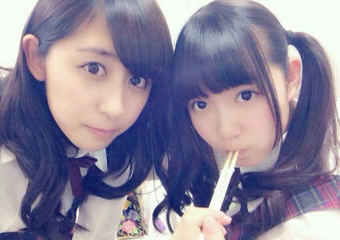

| 2014/05 05 Mon | ひめたん-OoO-その441 |
アンダーライブに握手会！
充実したゴールデンウィークでした＼(^O^)／
会いに来てくれたみなさん
本当にありがとうございました！
お留守番ちーむのみなさん
お待たせ！報告するよー
 アンダーライブ
アンダーライブ

セットリスト確認したい人は
かなりん (中田花奈ちゃん)ブログへ
いってらっしゃい
アンダーライブらしさを出したくて
セットリストとかいろいろ話し合ったんだよー
ひめたんね日記の中で何度も
3部ともちょっとずつ違う曲やるよって
言ったの覚えてるかな？
それでひめたんは
1部 偶然を言い訳にして
2部 (コウモリよ)
3部 私のために誰かのために
を披露させていただきました
そう！
シャッフルユニットをしたの！
これは3日限りのスペシャルユニットだよー
メンバーは全部 上手からの並び順ね
あっ上手ってゆーのは
ステージから見て右側ってこと。
◎1部 偶然を言い訳にして
ちはる、新内、大和、中元
ひめは橋本ポジ(＾ω＾)んふ
◎2部 コウモリよ
寧々、市來、永島、中田
愛未とひめたんオリジナルメンバーだから
バックダンサーしました
難しい曲なのに「やってみたい」って言って
チャレンジしてくれてありがとう
みんなかっこよかったよ！
◎3部 私のために誰かのために
川後、中田、優里、星野、万理華
永島、大和、中元、衛藤、ちはる
これ最後サビの並び順
オリジナルメンバーでいう
高山、川村、白石、衛藤、桜井ポジです
うーん難しいなー伝わる自信ないな(笑)
あとはひめたんの情報だと
制服のマネキン......松村
ガールズルール......深川
君の名は希望......松村
初恋の人を今でも(1部、3部)......川村
おいでシャンプー......西野
気づいたら片想い......深川
かな
お留守番ちーむのみなさんは
これを元に脳内ライブしてみてね＊
報告はこんな感じです
ここからは感想
熱かった！楽しかった！
個人的には今までのライブで
1番充実してました＼(^O^)／
何でだろう、出ずっぱだったからかな
自分たちもちょっと裏方に携わったからかな。
自分的に1番不安だったのが歌。
「私のために誰かのために」とか
いつかステージで歌ってみたかったから
このチャンスいただけてすごく嬉しかったのね
それと同時に自分の納得いく歌が
なかなか歌えなくて辛かったんだよなー
でも、日記のコメントで
みなさんが励ましてくださったり
メンバーのみんなも
ひめたんが悩んでること知ってて
大丈夫よーって言ってくれて
いろんな人に助けてもらって
あの曲が歌えました。゜(゜´ω｀゜)゜。
本番では、出来は置いといて
自分なりに気持ちよく歌えたよ！
そして、ユニット曲する前に
オリジナルメンバーからの
メッセージが流れたり
ダンスを教えてくれたりして
選抜メンバーの力もたくさん借りて
出来上がったライブです。
「偶然を言い訳にして」チームは
まいやん (白石麻衣ちゃん)に
とってもお世話なりました
まいやんありがとう（ ; ; ）
当日もプリンシパルのお稽古が終わってから
観に来てくれたメンバーもいて
終わってから
とってもよかったよ！って言ってくれて
みんなほんとにありがとね（ ; ; ）
普段はそれぞれの立場があるけど
みんなで乃木坂なんだなー
なんて素敵なチームなんだろうって
改めて思った1日でした。
そしてこのライブを通して
8thアンダーがより結束した感じがするっ
まいちゅん (新内眞衣ちゃん)のブログ嬉しかったよ
さゆにゃん (井上小百合ちゃん)は会場に
お手紙を書いてくれてたよー
5/17の名古屋に遊びに来てくださる方
楽しみに待っててくださいね(ヽ´ω`)
個別握手会

左 : 1部、2部
右 : 3部
パンツをはいたら
珍しいねひめたん！っていっぱい言われた( ^O^ )
1部......編み込みストレート
2部......編み込みサイドポニー
3部......編み込みツイン
2部と3部は安定のりぼんちゃんでした＊
ヘアも写メ載せたいところなんだけど
ひめたんの携帯は一度にたくさんの写メを
載せることができないポンコツなので
また後日(´・ω・｀)すまん
それでねっ
握手会はとゆーとね
ひめきゅんさんはお寝坊さんが少ないみたいで
みなさん優秀でひめは嬉しい(＾ω＾)
いないとは言ってないぞよ
みんなで頑張って
お寝坊さんゼロを目指しましょうね(＾ω＾)
メールのほうでね
体調が悪いって送ったから
たくさん心配してくれてたんだけど
昨日よりだいぶ元気だったよ！
でも声カッスッカッスでごめんね
途中からハイになってて......
ご迷惑おかけしました／(^o^)＼
はじめましての方も
お久しぶりの方も
みーんなみんな会えて嬉しかったよー
相変わらず
りぼん率ぴんく率が高くて
優秀すぎてひめ泣きそうーなーんて♪
みんなさすがです
みんなデキる人たちです！
ひめたんの日記の
コメント欄下２ケタに46を踏んだ方へ
手書きでコメ返するコーナー
＼ ひめたん46 ／

前回の日記の終わり方間違えてた←
メールとごっちゃになっちゃった
日記のシメは
ひめたんの分身ちゃんに任せると
決めているのに......なんてこった......
(＊´・ω・＊)ノ
コメント(548)
2014/05/05 23:30